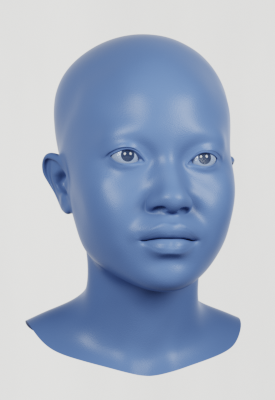
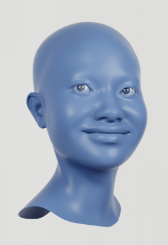
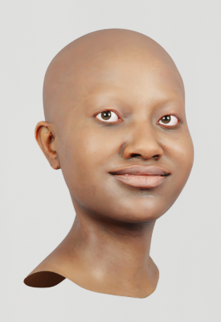
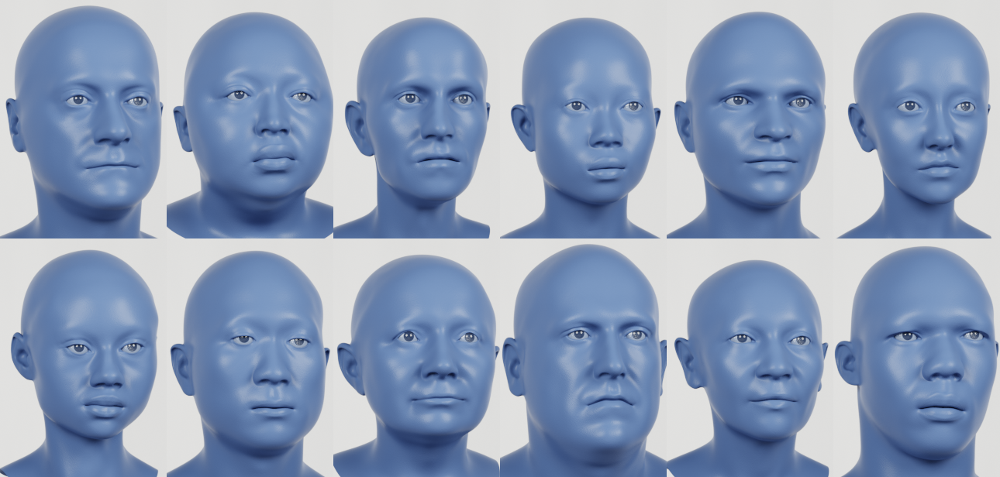
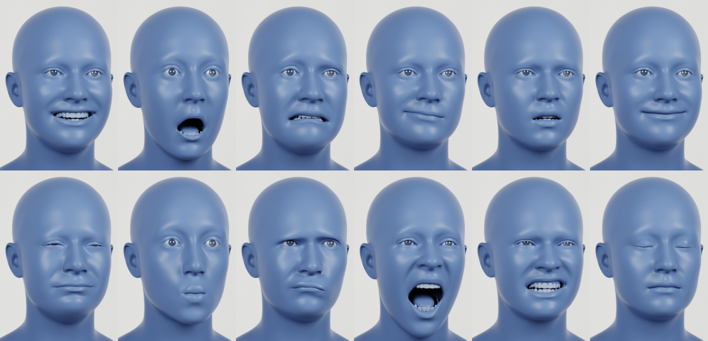

Method




Our synthetic faces are realistic, diverse, and expressive. Starting with our template face, we randomize the identity, choose a random expression, apply a random texture, and attach random hair and clothing. We finally render the face in a random environment using Cycles: a physically-based path tracing renderer.

Identities sampled from our generative model. We trained this model on a diverse set of high quality scan data.

We randomly pick facial expressions from our performance capture database of 70,000 frames.